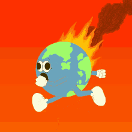
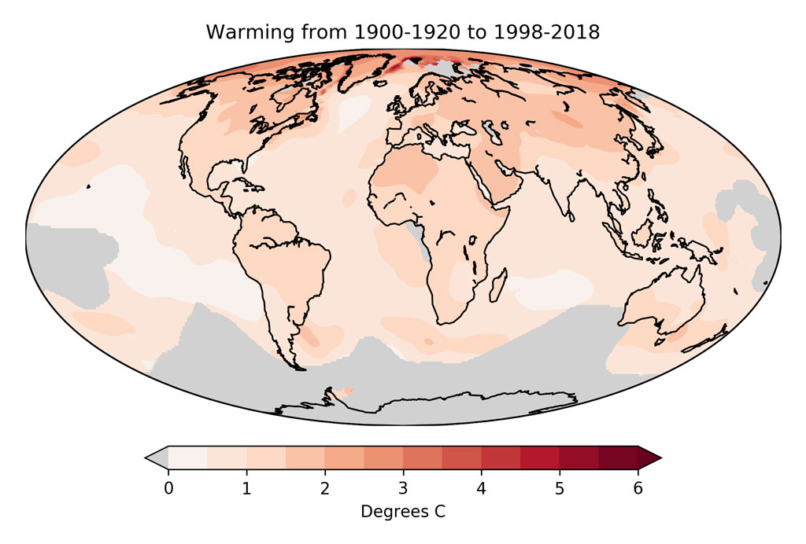

Big Solutions for a small planet
Climate change knows
no borders.
Solution of Global Warming
GLOBAL WARMING
There is no single solution to global warming, which is primarily a problem of too much heat-trapping carbon dioxide (CO2), methane and nitrous oxide in the atmosphere. (Learn more about the causes of global warming.) The technologies and approaches outlined below are all needed to bring down the emissions of these gases by at least 80 percent by mid-century. To see how they are best deployed in each region of the world, use the menu at left. Boosting energy efficiency: The energy used to power, heat, and cool our homes, businesses, and industries is the single largest contributor to global warming. Energy efficiency technologies allow us to use less energy to get the same—or higher—level of production, service, and comfort. This approach has vast potential to save both energy and money, and can be deployed quickly. Greening transportation: The transportation sector's emissions have increased at a faster rate than any other energy-using sector over the past decade. A variety of solutions are at hand, including improving efficiency (miles per gallon) in all modes of transport, switching to low-carbon fuels, and reducing vehicle miles traveled through smart growth and more efficient mass transportation systems. Revving up renewables: Renewable energy sources such as solar, wind, geothermal and bioenergy are available around the world. Multiple studies have shown that renewable energy has the technical potential to meet the vast majority of our energy needs. Renewable technologies can be deployed quickly, are increasingly cost-effective, and create jobs while reducing pollution. Phasing out fossil fuel electricity: Dramatically reducing our use of fossil fuels—especially carbon-intensive coal—is essential to tackle climate change. There are many ways to begin this process. Key action steps include: not building any new coal-burning power plants, initiating a phased shutdown of coal plants starting with the oldest and dirtiest, and capturing and storing carbon emissions from power plants. While it may sound like science fiction, the technology exists to store carbon emissions underground. The technology has not been deployed on a large scale or proven to be safe and permanent, but it has been demonstrated in other contexts such as oil and natural gas recovery. Demonstration projects to test the viability and costs of this technology for power plant emissions are worth pursuing. Managing forests and agriculture: Taken together, tropical deforestation and emissions from agriculture represent nearly 30 percent of the world's heat-trapping emissions. We can fight global warming by reducing emissions from deforestation and forest degradation and by making our food production practices more sustainable. Exploring nuclear: Because nuclear power results in few global warming emissions, an increased share of nuclear power in the energy mix could help reduce global warming—but nuclear technology poses serious threats to our security and, as the accident at the Fukushima Diaichi plant in Japan illustrates to our health and the environment as well. The question remains: can the safety, proliferation, waste disposal, and cost barriers of nuclear power be overcome? Developing and deploying new low-carbon and zero-carbon technologies: Research into and development of the next generation of low-carbon technologies will be critical to deep mid-century reductions in global emissions. Current research on battery technology, new materials for solar cells, harnessing energy from novel sources like bacteria and algae, and other innovative areas could provide important breakthroughs. Ensuring sustainable development: The countries of the world—from the most to the least developed—vary dramatically in their contributions to the problem of climate change and in their responsibilities and capacities to confront it. A successful global compact on climate change must include financial assistance from richer countries to poorer countries to help make the transition to low-carbon development pathways and to help adapt to the impacts of climate change. Adapting to changes already underway: As the Climate Hot Map demonstrates, the impacts of a warming world are already being felt by people around the globe. If climate change continues unchecked, these impacts are almost certain to get worse. From sea level rise to heat waves, from extreme weather to disease outbreaks, each unique challenge requires locally-suitable solutions to prepare for and respond to the impacts of global warming. Unfortunately, those who will be hit hardest and first by the impacts of a changing climate are likely to be the poor and vulnerable, especially those in the least developed countries. Developed countries must take a leadership role in providing financial and technical help for adaptation.
 